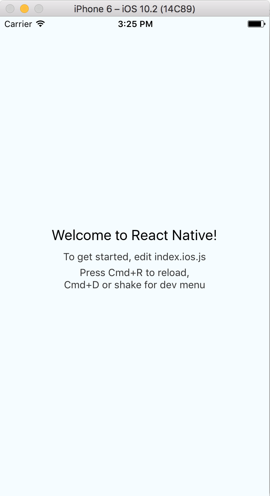

React Native is a framework developed by Facebook that allows you to build mobile apps using javascript. Traditionally, mobile developers learn android and ios development separately. React Native, however, allows you to use the same code for both platforms which makes this worth looking into.
This guide will show you how to create a simple React Native app as shown below...
I will also be documenting all the problems or bugs that I run into at the end of each section
Start off by installing React Native and the tools required to get started. The official documentation does a good enough job of how to do this so follow their guide
Note: This is currently only compatible if you are developing using a MacOS
Now once you are done installing node and watchman and then react-native-cli using npm, the guide instructs you to type the following lines into your terminal...
react-native init ProjectName
- this creates the project
cd AwesomeProject
- change directory to the newly created project
react-native run-ios
- runs the app with an ios simulator
or if you prefer to use an android simulator...
react-native run-android - this requires more setup as described in the official documentationWe will be using the ios simulator for this tutorial
Note: when you run react-native run-ios for the first time, expect to wait for a couple minutes as it does its initial setup
once it finished setting up, you should see the this:

Now you are ready to start coding!
The node installation also includes npm, a package manager for javascript. We are going to be installing native-base, which will handle a lot of the UI for us (bootstrap of react-native).